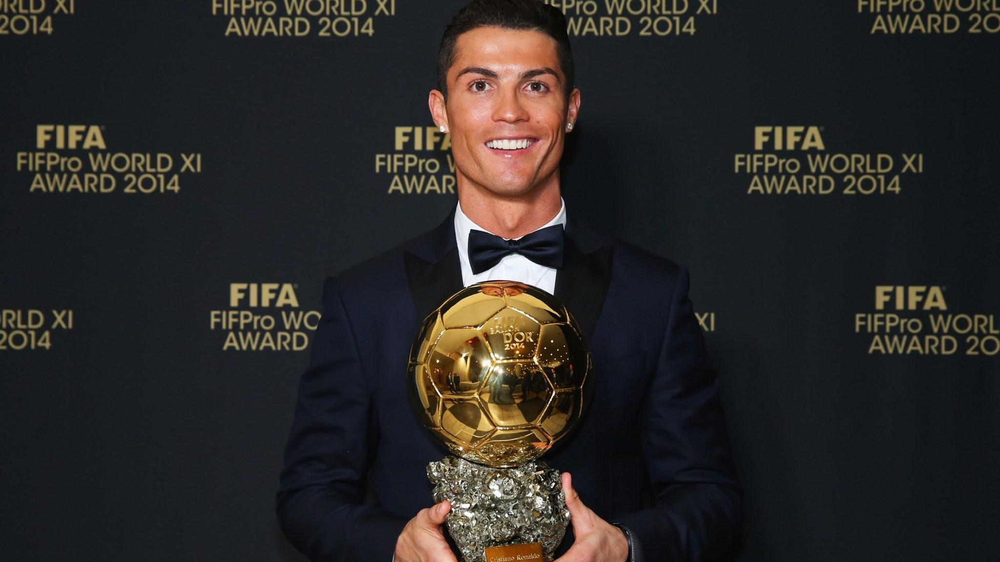

Introduction
Welcome to the official site dedicated to the extraordinary career of Cristiano Ronaldo – one of the greatest footballers to ever grace the pitch. Here, we celebrate the incredible journey of a man whose passion, dedication, and relentless pursuit of excellence have made him a global icon. From his early days in Madeira to becoming a legend in clubs like Sporting CP, Manchester United, Real Madrid, Juventus, and beyond, Cristiano’s story is one of triumph, perseverance, and unmatched skill. Explore his records, accolades, personal milestones, and contributions both on and off the field as we document the incredible legacy of a true footballing icon who inspired millions to follow in his footsteps.

Did You Know?
Over his very long and successful career spanning three decades, Cristiano Ronaldo has broken multiple records, cementing his legacy as one of the greatest footballers of all time with unparalleled achievements in club and international football. Here are some of his recorded records:
International Records:
Most International Goals: Ronaldo holds the record for the most goals scored in men's international football, with 135 goals for Portugal since his debut in 2003.
Most International Appearances: He has made the most appearances for Portugal, with 201 caps, and is also the most capped player in men's international football history.
Most Goals in FIFA World Cup Qualifiers: Ronaldo holds the record for the most goals scored in FIFA World Cup qualifiers, with 31 goals in 37 matches.
Most European Championships Appearances: Ronaldo became the first player to appear in six European Championships, further extending his record for international appearances.
Most Goals in European Championship History: Ronaldo has scored 14 goals in the UEFA European Championship, making him the tournament's all-time top scorer.
Club Records:
Most Goals in UEFA Champions League: Ronaldo is the all-time leading scorer in the UEFA Champions League, with 140 goals in 183 appearances.
Most Goals in a Single UEFA Champions League Season: He set the record for the most goals in a single Champions League season, scoring 17 times during the 2013–14 campaign.
Madrid Dynasty: He was an integral apart of a world conquering Real Madrid team that dominated Europe from 2015 to 2018 winning three Champions League titles in a row, becoming the first club in history to accomplish such a feat.
Most UEFA Champions League Hat-Tricks: Ronaldo has scored the most hat-tricks in the history of the UEFA Champions League, with eight to his name.
Most UEFA Champions League Final Goals: Ronaldo has scored four goals in UEFA Champions League finals, including decisive goals in the 2008, 2014, and 2017 finals.
Most UEFA Champions League Titles: Ronaldo has won the UEFA Champions League five times, with four titles coming with Real Madrid and one with Manchester United.
Most UEFA Champions League Assists: Ronaldo has provided the most assists in the history of the UEFA Champions League, with 40 assists to his name.
Real Madrid's All-Time Top Scorer: During his tenure at Real Madrid, Ronaldo became the club's highest-ever scorer, amassing 450 goals in just 438 appearances.
Major Personal Milestones:
First Active Footballer to Earn Over $1 Billion:Ronaldo became the first active footballer to surpass $1 billion in career earnings, highlighting his success both on and off the pitch.
Most Goals in Football History:As of February 2025, he has scored over 900 official senior career goals for club and country, making him the top goalscorer of all time.
The Highest Recorded Jump:While playing for Real Madrid against Manchester United during an UEFA Champions League match0 in 2013, Cristiano Ronaldo leaped an astounding 2.93 meters into the air to meet a cross and nod the ball confidently into the net.
These are only some of the records that underscore Ronaldo's exceptional talent, relentless work ethic, and enduring impact on the world of football.